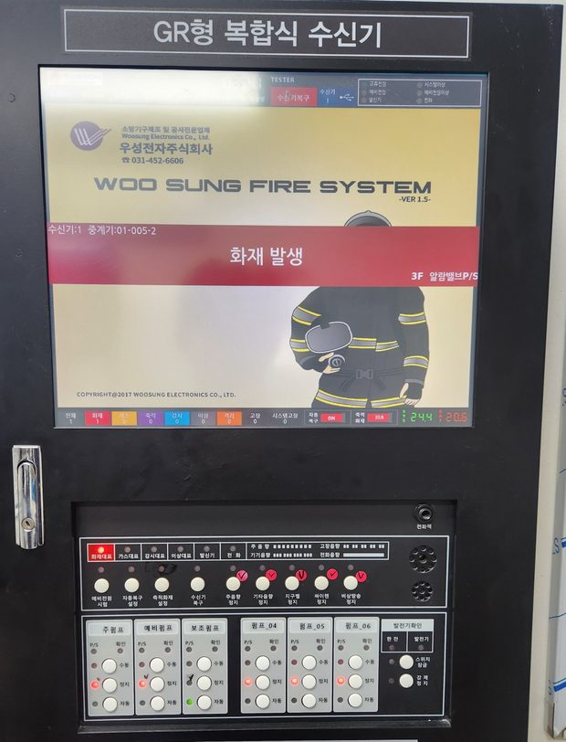
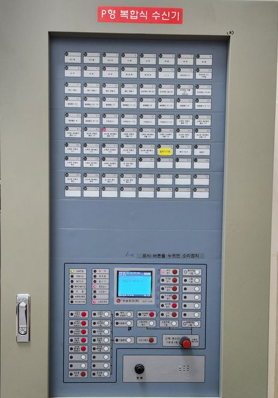
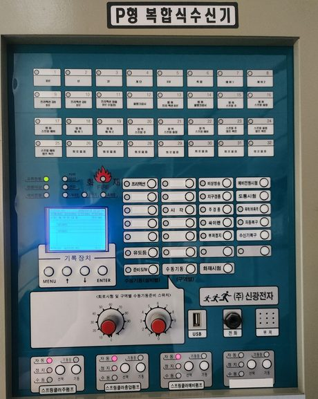
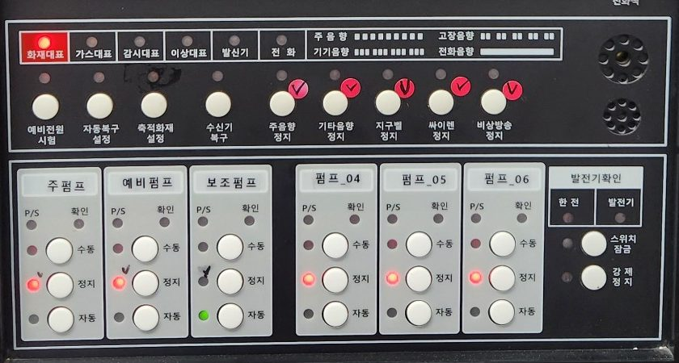
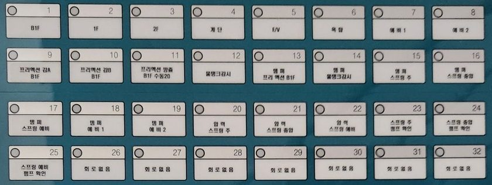
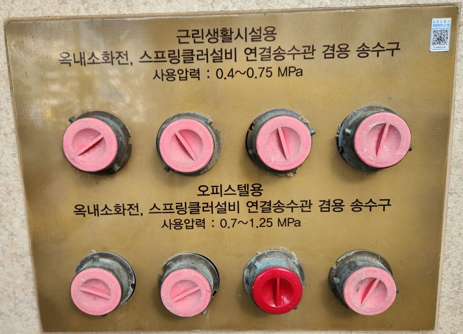

정확한 판단은 건물 정보와 현장 확인 후 안내합니다.
Fire safety inspection점검은 의무.
점검은 의무.
목적은 생명.
작동점검·종합점검·최초점검부터 소방서 결과 보고까지.
불량 내역만 적고 떠나지 않고, 지적사항 보수까지 마무리합니다.
작동점검 · 종합점검 · 최초점검 · 소방서 보고 대행 · 지적사항 보수



불량만 적고 떠나지 않습니다.
점검 즉시 보수팀까지 연결.
실제 점검 현장의 수신기점검 즉시 보수팀까지 연결.
01법정 주기에 맞춘 점검
02소방서 결과 보고 대행
03지적사항 즉시 보수 연계
01 / Find your situation우리 건물은
우리 건물은
지금 어떤 상황인가요?
상황을 선택하면 확인할 내용과 준비할 자료가 나옵니다. 점검 종류와 비용은 건물 정보를 확인한 뒤 안내합니다.
02 / Service scope점검 종류가 다르면,
점검 종류가 다르면,
확인하는 깊이도 다릅니다.
작동점검은 기능이 작동하는지,
종합점검은 기준에 맞는 성능인지까지 확인합니다.
작동점검
감지기 시험기로 감지기 작동, 소화전 앵글밸브·호스 상태, 피난구·통로 유도등 점등, 비상방송 연동을 시험합니다. 경보·피난 계통의 이상 유무를 확정하는 점검입니다.
감지기 작동소화전 호스유도등 점등비상방송 연동
종합점검
소화펌프 주펌프·충압펌프 체절운전과 정격운전 성능시험(유량 계측), 알람·프리액션밸브 압력 셋팅, 수신기(P형/R형) 회로 전압과 절연저항을 계측합니다.
펌프 성능시험밸브 압력회로 전압절연저항
최초점검
신축 건축물은 사용승인 후 60일 안에 관련 법규 적합성을 확인하고 보고서를 작성합니다. 공사 하자를 찾아 무상 A/S 기간 안에 조치받도록 돕습니다.
사용승인 후 60일하자 확인보증 서류유보금
소방전기 · 소방기계 계통
방화셔터 2단 하강 연동(연기·열 감지기), 제연설비 댐퍼 작동과 풍압, 스프링클러 헤드 주변 살수 장애, 가스계 소화설비 약제량과 제어반을 점검합니다.
방화셔터제연 댐퍼살수 장애가스계 약제
점검 결과 지적사항은 달인명인 보수팀과 바로 연결합니다. 무조건적인 대형 공사나 전체 교체를 권하지 않고, 선로 쇼트·미세 유격 같은 근본 원인만 짚어냅니다.
03 / How it works점검은 하루, 책임은 1년 내내.
점검은 하루, 책임은 1년 내내.
누가 무엇을 하는지부터.
건물주·관리자·임차인 등 관계인에게 소방시설 관리의 의무와 책임이 있습니다.
점검부터 소방서 제출, 보관까지 순서대로 챙겨야 합니다.
01 / OWNER
관계인 의무
건물주·관리자·임차인
점검 실시와 결과 보고 책임
02 / INSPECT
관리업체 점검
등록 소방시설관리업체
소방시설관리사 현장 계측
03 / REPORT
보고서 전달
점검 후 7일 안에
관계인에게 결과 전달
04 / SUBMIT
소방서 제출
15일 이내 관할 소방서 보고
보고서 2년 이상 보관
의무를 다하지 않아 사고가 나면 과태료·벌금은 물론 민형사상 책임까지 관계인에게 돌아갑니다.
DATA / Inspection points소방시설별
펌프 제어반주펌프·예비펌프·보조펌프의 수동·정지·자동 전환과 P/S(압력스위치) 표시등으로 기동 상태를 확인합니다. 회로 표시창프리액션·템퍼·압력스위치 등 회로별 표시등과 단선 여부를 하나씩 시험합니다. 연결송수관 송수구사용압력 표시, 마개 상태, 주변 장애물을 확인합니다. 소방차가 물을 보내는 입구입니다.
소방시설별
점검 항목과 포인트
점검 때 실제로 보는 곳입니다. 표시 없이 지나가기 쉬운 항목일수록 사고 때 문제가 됩니다.
| 설비 | 주요 점검 항목 | 점검 포인트 |
|---|---|---|
| 감지기 | 동작 여부, 오작동, 노후·파손 | 테스트 시 수신기 반응 여부 |
| 수신기 | 회로 이상, 전원(AC/DC), 경보 기능 | 고장 표시·복구 기능 확인 |
| 펌프 | 자동 기동·정지 기능, 누수·진동 | 주펌프·보조펌프 작동과 압력 확인 |
| 스프링클러 | 헤드 부식·막힘, 배관 누수, 압력 | 1구역 이상 실제 방수 시험 |
| 옥내·외 소화전 | 호스 상태, 개폐밸브, 방수압 | 방수압 0.17MPa 이상 유지 확인 |
| 유도등·비상조명 | 배터리 불량, 점등 불량 | 비상 전원 전환 작동 확인 |
| 방화문 | 자동 닫힘 기능, 개방 여부, 파손 | 문틀·힌지 마모 확인 |
| 피난시설 | 비상구 적치물, 표지판 훼손 | 피난 경로 확보와 장애 요소 제거 |



04 / Know the scope법정 점검의
법정 점검의
종류와 주기.
스프링클러 설치 여부, 신축 여부에 따라 받아야 하는 점검이 달라집니다.
| 점검 종류 | 대상 · 주기 | 주요 내용 |
|---|---|---|
| 작동점검 | 모든 소방시설 · 연 1회 이상 | 작동 여부와 정상 기능 확인 (외관 및 작동 테스트) |
| 종합점검 | 스프링클러 등 설치 대상물 · 연 1회 이상 | 설치 기준과 화재안전기준 적합성 종합 진단 |
| 최초점검 | 신축 건축물 · 사용승인 후 60일 내 | 관련 법규 적합성 확인과 보고서 작성 |
점검 시기는 건축물 사용승인일이 속하는 달을 기준으로 정해집니다. 종합점검 대상은 종합점검을 받은 달부터 6개월이 되는 달에 작동점검을 받습니다. 최초점검은 건축사 출신 소방시설관리사에게 받으면 공사 하자를 놓치지 않기 좋습니다.
05 / Cost guide비용은 면적과 시설에 따라,
비용은 면적과 시설에 따라,
먼저 대략을 확인하세요.
소방점검 평균 단가(참고용)입니다. 실제 비용은 면적, 시설 종류, 노후도에 따라 크게 달라집니다.
우리 건물 점검 비용 문의 ↗소방점검 평균 단가 (참고용)
~60만 원 소형 기준
소형 건물 (~660㎡) 기준 예시
모든 건물에 적용되는 정액 상품은 아닙니다.
- 소형 건물 (~660㎡): ~60만 원
- 중형 건물 (~5,000㎡): ~150만 원
- 대형 건물·공장 (5,000㎡ 초과): 150만 원 ~ 수백만 원
- 셀프점검 가능 대상은 장비 대여 + 보고서 작성 지원 10만 원
- 월 안전관리 대행과 묶으면 연간 작동·종합점검 비용을 월 관리비 안에서 관리할 수 있습니다.
06 / Legal duty점검을 미루면,
CHECK / 01 CHECK / 02 CHECK / 03
점검을 미루면,
책임은 관계인에게 남습니다.
「소방시설 설치 및 관리에 관한 법률」에 따른 주요 불이익입니다.
자체점검을 하지 않으면
소방시설 자체점검을 하지 않거나 관리업자 등에게 점검하게 하지 않으면 1년 이하의 징역 또는 1천만 원 이하의 벌금 대상입니다.
결과를 보고하지 않으면
점검 결과를 보고하지 않거나 거짓으로 보고하면 300만 원 이하의 과태료 대상입니다. 점검 완료 후 15일 이내에 제출해야 합니다.
피난시설을 막으면
피난시설·방화구획·방화시설을 폐쇄·훼손·변경하거나 주위에 물건을 쌓아 두면 300만 원 이하의 과태료 대상입니다.
구체적인 처분은 위반 횟수와 관할 소방서 판단에 따라 달라집니다. 이 페이지는 법률 자문을 대신하지 않습니다.
07 / Field situations증상이 같아도,
증상이 같아도,
원인은 다를 수 있습니다.
점검·보수 현장에서 자주 만나는 상황을 정리한 진단 시나리오입니다.
새벽마다 울리는
화재 경보
- 구분할 문제
- 감지기 불량인지, 선로 쇼트·습기 문제인지 구분
- 확인할 계통
- 수신기 회로 전압 → 절연저항 → 해당 구역 감지기
- 작업 후 확인
- 같은 구역 재발 여부와 수신기 정상 복구
방화셔터가
끝까지 안 내려옴
- 구분할 문제
- 연동 신호 문제인지, 셔터 기계 유격 문제인지 구분
- 확인할 계통
- 연기·열 감지기 → 연동 제어반 → 2단 하강 → 기계부
- 작업 후 확인
- 1단·2단 하강과 수신기 표시 확인
점검 때마다
펌프 압력 부족 지적
- 구분할 문제
- 펌프 성능 저하인지, 밸브·압력 셋팅 문제인지 구분
- 확인할 계통
- 주펌프·충압펌프 → 압력스위치 → 알람밸브
- 작업 후 확인
- 체절·정격운전 성능시험과 기동·정지 압력
SOLUTION / 점검24 & 달인명인소화펌프실 현장 점검 — 배관·밸브·감지기를 직접 확인합니다  달인
달인
점검하고 끝내지 않습니다
일반 점검업체는 불량 내역만 남기고 떠나기 일쑤입니다. 달인명인은 점검과 보수를 한 줄로 잇습니다.
점검
소방시설관리사 현장 계측 — 건축물대장·소방 도면을 미리 분석하고 전문 장비로 검사해 지적사항을 데이터로 정리합니다.
보수
달인 보수팀 실시간 연결 — 지적사항을 가장 빠르고 합리적인 비용으로 정리합니다. 무조건적인 대형 공사나 전체 교체를 권하지 않습니다.
관리
월간 관리 연계 — 일회성 점검으로 끝나지 않고 월 안전관리 대행(구독)으로 다음 점검까지 상태를 유지합니다.
“소방점검은 법적 의무를 채우는 일이 아니라, 재난에서 사람과 재산을 지키는 가장 확실한 예방책입니다.”— 달인명인 소방점검팀
달인이 서비스의 담당 달인 · 소방안전관리 대행
강현준 달인매월 100개 건물
“현장 출동·경보 대응까지 하는 진짜 전문가.”
- 매월 100개 건물 소방 점검·안전관리
- 전기 + 소방 (점검·공사·안전관리)
- 경보 오작동 현장 출동 대응
- 월간 점검·기록 관리
- 경보 오작동 현장 출동 대응
- 작동·종합점검 일정과 소방서 대응
대표 해결 사례 · 다중 건물 월 안전관리 대행
매월 100개 건물의 소방시설 점검과 안전관리를 직접 수행하며 지적사항 사전 차단.
08 / Working process의뢰부터 보관까지,
의뢰부터 보관까지,
10단계로 진행합니다.
점검 의뢰 · 일정 협의
사용승인일 기준 점검 시기와 방문 일정을 정합니다.
대상 시설물 확인
건축물대장·소방 도면을 미리 분석해 점검 종류와 범위를 확인합니다.
소방설비 작동시험
감지기·발신기·경종·수신기 연동을 시험합니다.
옥내·외 소화전 점검
호스·개폐밸브 상태와 방수압을 확인합니다.
펌프 · 제연 · 방화시설 점검
펌프 성능, 제연 댐퍼, 방화셔터·방화문을 점검합니다.
지적사항 정리
불량 사항을 경미·중대로 나눠 사진과 함께 정리합니다.
보수 견적 조율
고칠 수 있는 것은 고쳐 쓰는 방향으로 보수 범위를 협의합니다.
보고서 작성 · 전달
점검 후 7일 안에 결과 보고서를 전달합니다.
소방서 제출
15일 이내 관할 소방서에 결과 보고를 대행합니다.
보고서 보관
보고서는 2년 이상 보관하고, 다음 점검 일정을 미리 알려드립니다.
09 / Before you call이 세 가지가 있으면
이 세 가지가 있으면
견적이 빨라집니다.
건물 등급이나 점검 종류를 몰라도 괜찮습니다.
있는 자료만 보내주시면 확인해 드립니다.
① 건축물대장
연면적·층수·용도와 사용승인일을 확인합니다. 점검 종류와 시기가 여기서 정해집니다.
② 지난 점검 보고서 · 지적사항
이전 점검 결과와 이행하지 못한 지적사항이 있으면 함께 보내주세요.
③ 소방 도면 · 현장 정보
소방 도면이 있으면 좋고, 없으면 주소와 담당자 연락처, 출입 가능 시간을 알려주세요.
10 / Questions & answers
관리자님이 자주 묻는 질문.
소방점검은 꼭 업체에 맡겨야 하나요?
종합점검 대상 등은 소방서에 등록된 소방시설관리업체가 점검해야 합니다. 관계인이 직접 점검할 수 있는 대상이면 셀프점검(장비 대여 + 보고서 작성 지원 10만원)도 가능합니다. 건축물대장을 보내주시면 대상 여부를 먼저 확인해 드립니다.
점검 시기는 언제인가요?
건축물 사용승인일이 속하는 달을 기준으로 정해집니다. 종합점검 대상은 종합점검을 받은 달부터 6개월이 되는 달에 작동점검을 받습니다. 신축 건물은 사용승인 후 60일 안에 최초점검을 받아야 합니다.
점검 후 보고는 누가 하나요?
점검 후 7일 안에 결과 보고서를 전달하고, 15일 이내 관할 소방서 제출까지 대행합니다. 보고서는 2년 이상 보관해야 합니다.
지적사항이 나오면 바로 고쳐 주나요?
네. 점검 즉시 달인 보수팀과 연결해 견적 후 처리합니다. 무조건적인 대형 공사나 전체 교체를 권하지 않고, 원인을 짚어 필요한 범위만 보수합니다.
최초점검은 무엇이 다른가요?
신축 건물의 법규 적합성을 확인하는 점검입니다. 이때 공사 하자를 찾아 무상 A/S 기간(보통 2~3년) 안에 시공사에 조치받는 것이 중요합니다. 하자보증이행각서와 유보금 서류도 함께 확인해 드립니다.
점검 비용은 얼마인가요?
참고 단가는 소형(~660㎡) ~60만원, 중형(~5,000㎡) ~150만원, 대형·공장은 150만원 이상입니다. 면적, 시설 종류, 노후도에 따라 달라지므로 건축물대장을 보내주시면 정확히 안내해 드립니다.
매달 관리까지 맡길 수 있나요?
네. 안전관리 월대행으로 매월 방문 점검과 기록, 작동·종합점검 일정 관리, 소방서 대응까지 맡길 수 있습니다.
11 / Talk to a specialist점검 일정이 다가오기 전,
점검 일정이 다가오기 전,
먼저 확인해 보세요.
소방점검 상담
담당: 강현준 달인 · 소방안전관리 대행
상담 접수: 달인명인 · 주식회사 점검24
건축물대장·지난 점검 보고서는 상담 시 안내받은 경로로 보내주세요.
점검 일정·비용은 건물 정보를 확인한 뒤 안내합니다.
이메일: ii21@naver.com
점검 일정·비용은 건물 정보를 확인한 뒤 안내합니다.
이메일: ii21@naver.com